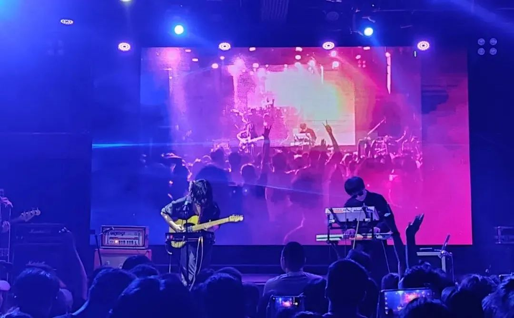

本文是张衔瑜第227篇推文
共计3682个字，1张图
好久没有写乱七八糟发生的事了。本着想一出是一出的原则，今天也随便从哪写到哪。有位高人说这叫开放的场域，感觉是理解起来准入门槛有点高的词语。合理化。
最近读完了的书是梁庄三部曲：《中国在梁庄》、《出梁庄记》、别册、以及《梁庄十年》。不过我不是按照这个顺序来的。我先看了最新的这一部2020年疫情纪元开始之后所写的《梁庄十年》，然后才看之前的那两本书和薄薄的别册。今天之所以想写这一篇，主要也是想随便写点和看完这本书有关的。
梁庄，是河南南阳穰县吴镇的一个村庄，作者隐去了更具体的方位，我也没有要细究的意图。分类上说，这属于非虚构写作。作者按照访谈自述以及记叙的方式，从第一本书里讲乡里乡亲的人情世故、到第二本书讲梁庄在外务工的人们、到别册中请了一些人把自己表扬一番、到第三本书十年的对比。结构其实蛮清晰的，不愧是人大文学院的教授。
我最想记下来的是：作者梁鸿带着乡村人而又离开乡村的城市生活体验，在描写着这一处的地方，人们把这叫乡土文学；而在我自己提起相机，被别人定义为总是喜欢去拍烂房子也好，我自己眼里的古建筑及村落环境提整也罢——梁鸿在她有感的题材中写，我在我有感的题材中读文献和拍照，取名乡土文学或者取名废墟片都不重要，重要的是不费什么力就能感性或理性地发现里边的关联。
不写了。没写到我想要的样子。
有个地方是神奇的，叫浏阳的洞阳山。直接搜索这个山，大部分都不是所要指的那一座。要指的是搜索山上那座道观的名字，隐真观。
山下有一处小水库。
山在浏阳城外的群山之中。
我们大概也就凭着这两个看起来不是线索的消息去找地方。
特殊之处倒没什么，来历是当年药王孙思邈在此开坛诊病，最后坐化的地方。长沙市内也有药王街，上次我拍的青春蛋炒饭就在那。
庙左有药塔一座，我凑近看，里边还不知道是哪个年岁放的鞭炮屑。偏堂中有供盘香十余座。道教三十六洞天之第二十四，正殿中坐玉皇大帝也很合理。
造像也许是工艺一般的时候建造的，看起来不怎么过细。正殿两边是观音殿和财神殿，因为也没有什么游客过来，我也是打了殿外的党员先锋岗电话，党员说可以观音殿没栓门的话可以直接从那边进。于是我就进来把正门打开了。
这里有意思之处在于，抽签之后可以对两边的解签辞。当然抽签这种事情，在哪里都有。药王殿的不一样，这里除了普通的家签和财签之外，还有药签。店里的道长把签筒藏在了不知道的地方。大抵是身体背不住的时候，人们可以来这里求一服药。这又不同于传统中医的望闻问切，但是药本又是中医的那一套。
想起之前说湘西的民族特征区域，这里的聚落中会出现这一民族自己的医学：比如苗医。要从科学的角度来框框，就好像水土不服地不在一个体系里；但如果从实证的角度来这种方式对一地居民的体质健康提升，又有其成效。相比之下我更愿意觉得，这是一个地方风土养成的、也是一个地方风土所需要的(健康手段)，所以都需要了来。强行开窍的故事早在几千年前就已经寓言得很清楚了。
正中午的时候，太阳从几个不同的孔洞中照入殿内。孔打得非常好，非常圆，只有在关了正殿门的时候，内里光线暗下来才能见到。起初，我只在没有开灯的观音殿殿门边看到了一个。后来关了正殿门，才又陆续发现了四个。而这时，观音殿的小光斑已经移动到了门框的木柱子上，不仔细瞧根本看不见了。
最近读的一本书是《正午：此地不宜久留》其中随笔集里，有一篇是赋格写的《柬北无战事》，主要地点则是泰国和柬埔寨边境上的柏威夏寺Preah Vihear，属于吴哥遗址中的一处。看起来是硝烟甚嚣迹刻的地方。
\
看完这本书了。非虚构写作的这个方向，最近我是不会再碰了。打开的新书是《巴黎评论：作家访谈1》。梁鸿的《中国在梁庄|出梁庄记别册》是找了一些人来表扬、也有自己的访谈录。这些非虚构作家写的是非虚构，在被采访时说的也是非虚构；只不过巴黎评论里的一些作家写的是非虚构作品，被采访时也不知其几千里也。
接下来应该会继续尝试读荣格的《红书》，之前(半年前吧)扔在我枕头旁边，后来某一次掀床单洗晒的时候放一边就没拿着过了。
最近可是去听了几次乐队的现场，就像做有氧运动一样频繁。湘西之行回来之后，几乎就是健身房、看书、出去逛、搞一些学校的事情才打开电脑就烦得打吊针。蹦迪治大病，去听相声也看了一次大兵，在五一节的时候。
大兵，广泛言之现在的笑工厂，感觉缺乏了共鸣性、你也可以简单评论说新人们的段子缺乏打磨流于表面。记得某一年，批评春晚的相声直接抢了歌唱类节目的活。诚如斯言。说学逗唱，相声本身的唱就不是理解成流行唱法或者其他任何一种摇滚民谣之类的形式。我对一些“你能唱这个吗？你能唱那个吗？”这样的表演有点无语，也对一些和两性有关但是并不好笑的段子觉得很失望——感觉像没什么可笑的了随便扯扯淡来搪塞一下。
点名周卫星，五七年的人已经六十五岁了，退休又返回。小时候，我说是三年级以下的时候，那会儿去文艺表演现场看周卫星，觉得是个很了不起的人物。没记错的话，那时候和更早的时候他还和杨五六杨志淳搭档，和三湘第一美女何晶晶搭档。在文艺表演现场的时候，还有幸运小朋友上台去，周卫星亲自教怎么用脸颊的一个部位想办法发出开啤酒瓶盖的声音。我到现在还有印象，而且现在也不会。但是这一次见到，却完全是一副令人失望的样子，我只能和朋友面面相觑“他在干什么啊？天呐，快别毁童年了。”此类。
倒是有一段南北对比，原本是个挺好的鸳鸯锅，结果没煮透。沈阳快板和长沙的(弹词)快板，节奏上来了其实都可。可惜没有继续深入，停留在了南北方演员互相不买账，当然这也是情理之中的事。两串肉丸各放一边，不过都只煮了个外面。汤是好汤，煮不透除非是怕不好卖座，不然感觉没别的道理。
最后大兵上场，基本上为了情怀买单的都是来看他。而大兵也的确兜住了这个底，只不过用的还是以前的段子。去年在逛义乌小商品城涨知识见世面的时候，许多铺子外边头贴着“同行勿入\n面斥不雅”，但我的确想引来自北方相声的一些说法来谈。因为本质上来说，相声或者各种笑料段子都有很大程度是尝新鲜的事，不想让盗录就是为了还观众一个新鲜。倘若不去钻研包袱而每次都炒冷饭，听折子戏只会让我知道：这里没新的了，下次不去。
支持本土曲艺品牌是一回事，但是我更经常的活动地点是在健身房和音乐现场。外加一点评书专场，可惜后来就一直没找到机会去了(没开也是一个原因)
最近的Livehouse去得不少
5.3分手俱乐部/ 春击浪 / 无望春
5.6沉舟Sunken Boat / 回春丹/ 丢火车Lost Train
5.7ColorfulBar 彩文
我更愿意去听歌。一方面是个运动，我把场地当有氧运动来玩；另一方面，歌也的确很多，有些歌可以听蛮多回。
不过没什么好说的。分手俱乐部我不怎么听，春击浪是失浪潮来不了临时替补的一支太原乐队。无望春倒是很熟悉，而且很喜欢一些曲风，在Smoking Area 25和万青身上都看到过。三号无望春又春击浪，四号是春天的最后一天，五号立夏，六号回春丹。谐音梗爱好者喜欢一些巧合。七号彩文的现场有人按照乐队原来的名字，带了只彩色文胸去。火车就跟着这只彩色文胸开到了彩文主唱的跟前。
其实在我们蹦迪的时候，我就已经在同场次的乐迷群里看到说另一个人的消息了。长沙发生的自建房垮塌事件，遇难者五十三分之一：是一位要从新民学会这边找人拼车回长沙医学院的女生。她买了六号这一场的票，也买了22号白日密语的票，那一场我也想去但是还没买。所以丢春丹这一场本来还有一个，也许平日里不起眼的女生，因为这样的原因来不了现场。
丢火车是六号最晚出场的乐队，在《晚安》这首歌之后没有安可，少见地地唱了《沙子》这首歌：
听不见你的留恋
凌乱开始蔓延
这一切都将要
消失在昨天
沙子的眼泪
已经变成了幸福
就像秋天的花朵
一次次地成熟
唱完之后，主唱球子说：“我们知道，长沙最近发生了一些事情。我希望我们的身边永远都不要发生意外，永远都不要被生活所带来的困难所干扰。我们要好好生活，走好脚下的路，过好自己。”我在现场，已经三支乐队演完，加上换场都快三个半小时之后，听到这段话。我于是觉得丢火车十五年，是仍然保持着一些摇滚乐的本质在：不仅仅是拿一些口水歌在寻思着怎么让人好蹦好撒欢，而是有Go deeper and care about the world. 上一个我常听的探讨这些而且很活跃的人，还是一位爱吃西班牙馅饼的南京市民。
已经几个朋友在我看完回春丹之后来问我知不知道回春丹的秘密，搞得好像这是个什么秘方一样。实际上是一些说回春丹假唱或者几段用了PGM之类总之是一个意思，觉得不值得去，不然那都不是live演出了。首先呢，我没有看出来，这可能是我的专注度不够或者听歌水平受限，放一边；其次我觉得这一次听，比我上次听回春丹专场的体验要差，收声上似乎有一点问题，刘西蒙看起来过于憔悴，包括传统艺能跳舞都有点对付的意思？最后我觉得他们做得真的很可的是带出了一批乐队称呼为师兄。
即使频繁地运动和音乐现场，每天的睡眠时间依旧很长。看书和睡眠更是劲儿往一处使，看久了书，自然就困了。又不可能一直PVZ, daily 也只有那么一点点，还不如下楼去中百罗森买一杯我喜欢的沁葡水。也没有多喜欢。
附上一张，彩文现场，终于有了一张和乐队合影的照片。当时背后的实时摄影机把我和Nuage élégant举起的手投到了大屏幕上，我再抬起另一只手拍下，就有了这张照片。图集下次发。
